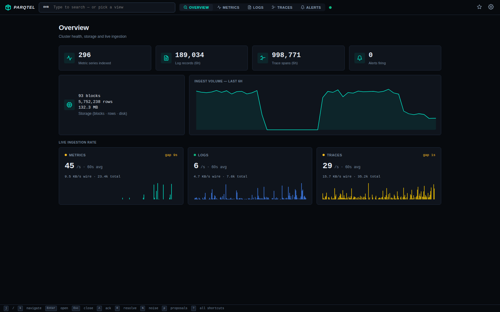
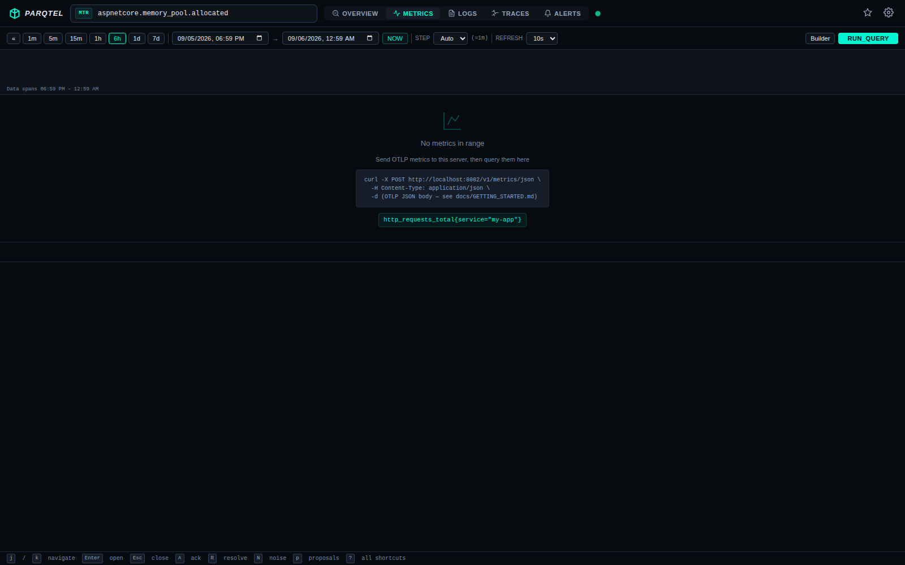
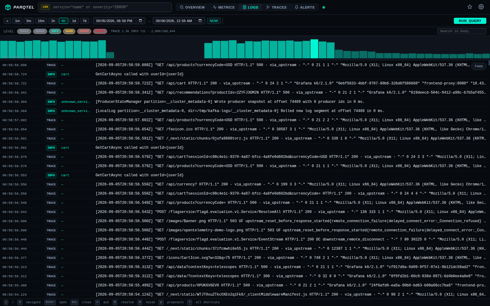
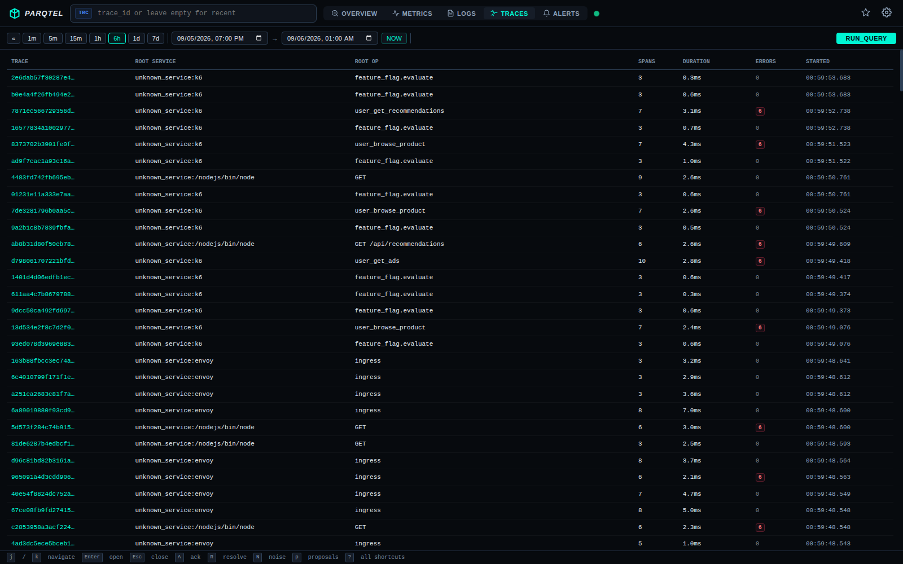
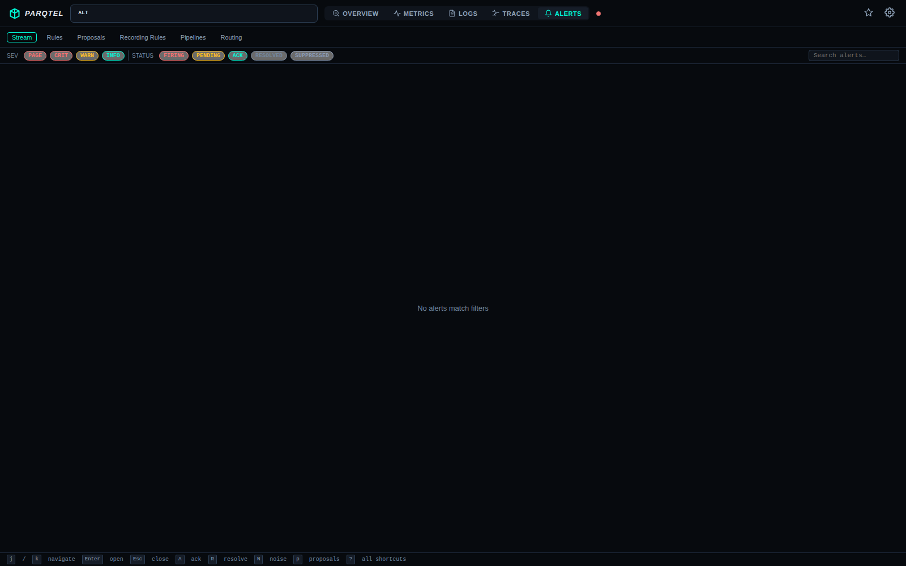
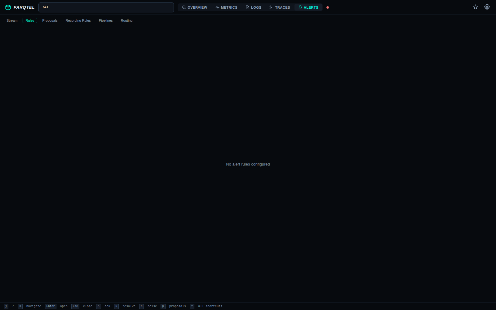

Built-in Web UI
Parqtel ships a zero-dependency web console at /ui — no separate frontend deployment, works air-gapped. It includes an overview dashboard, a guided metrics Builder⇄Code query editor, log field facets, a trace-grouped browse list with waterfalls, boolean log/trace search, firing alerts with evidence, rule and silence management, and deep-linkable URLs.
Click any screenshot to open the full image.
{kind=link}

OverviewStat cards, storage + 6h ingest volume, and live per-signal rate cards with spike/gap sparklines and wire bytes/sec.
{kind=link}

MetricsPromQL query with autocomplete and a time-series chart.
{kind=link}

LogsSeverity filtering and full-text search over Parquet-backed logs.
{kind=link}

TracesTrace waterfall with span timing and cross-signal correlation.
{kind=link}

AlertsLive firing alerts with severity chips and evidence.
{kind=link}

Alert rulesRule management with the routing and silence views.
Run it yourself
Start Parqtel and open http://localhost:9090/ui:
docker run -d --name parqtel -p 8080:8080 \
-v parqtel_data:/var/lib/parqtel parqtel/parqtel:latest
# → http://localhost:8080/ui↗
For production dashboards, point Grafana at Parqtel as a SimpleJSON datasource.